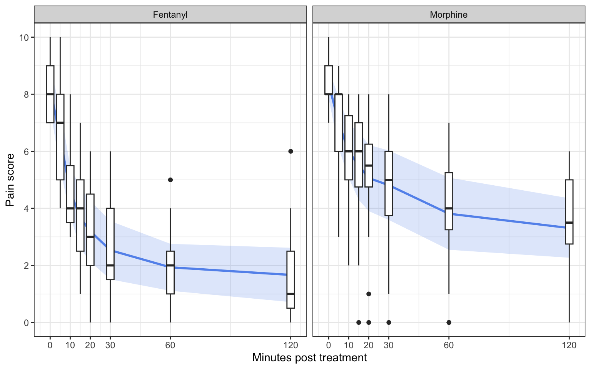

Assignment: Classic hypothesis tests and equivalence tests
Introduction
In many research contexts, the goal is not only to determine whether two groups differ, sometimes we want to show that one treatment is better than another. Other times, we want to demonstrate that treatments are similar enough to be considered practically equivalent.
Classic null hypothesis significance testing (NHST) is designed to detect differences, but it is not suited for demonstrating equivalence or non-inferiority. Failing to reject a null hypothesis of “no difference” does not constitute evidence that the groups are equivalent—it simply means we lacked sufficient evidence to conclude they differ. To address this limitation, researchers use specialized approaches: non-inferiority tests and equivalence tests.
In this assignment, you will:
- Conduct classic hypothesis tests to evaluate differences between groups
- Perform non-inferiority tests to determine whether a treatment is “not worse by too much”
- Conduct equivalence tests using the Two One-Sided Tests (TOST) procedure
- Compare results across different sample sizes to understand the role of statistical power
- Interpret results in context and draw appropriate conclusions
Submission Procedure
- Deadline: 08-05-2026 (23:59)
- Submit a reproducible
.Rmdfile namedassignment_equivalence_{student_number}.Rmd - DO NOT include your name as the author in the YAML header
- Ensure the title includes “Assignment Equivalence”
- Download the folder
assignment_equivalencefrom Canvas. - Ensure your code is well-organized:
- Do not use absolute paths to load the dataset.
- Load all required packages at the top of your document. You will work with
tidyverse,TOSTERandbroom. - Use headings to structure your report clearly.
- All code must run without errors when knitted.
Part 1: Exploring the data
You will work with a use a real dataset (morphine.csv) comparing pain scores between fentanyl and morphine. The dataset contains a unique id from 31 subjects (subject), information about which arm (“Morphine”or “Fentanyl”), and a series of pain scores measured over time (a_painscore0:h_painscore120).
Task 1
Before conducting any statistical analysis, explore the variables of interest. We will be looking at the pain score after 120 minutes (h_painscore120).
Select the variables will you need for comparing pain scores between treatment arms.
Make a table of descriptive statistics (mean, standard deviation, sample size) for each treatment group.
Make violin or box plot to show the distribution of pain scores 120 minutes after treatment
Part 2: Testing for a difference
Task 2:
Test whether there is a difference in pain scores (h_painscore120) between fentanyl and morphine.
Fit a linear model using
lm()Now conduct a two-sided t-test using
t.test().For both tests report the mean difference (estimate), the t-statistic and their corresponding p-value. What can we conclude based on the reported p-value?
What do you notice when comparing the results from
lm()andt.test()?
Task 3:
Now suppose you want to test whether fentanyl results in lower pain scores than morphine. Hint the statistical test should align with this directional hypothesis
Conduct the appropriate test
How does this hypothesis differ from the one you tested in Task 2?
What can you conclude based on the test result?
Part 3: Non-inferiority testing
Next, we will use the TOSTER package to conduct two one-sided tests to evaluate whether morphine is non-inferior to fentanyl. Because fentanyl carries a higher risk of addiction, we are willing to consider an alternative that may be slightly less effective at reducing pain, provided it is not substantially worse.
Task 4:
Specifically, we define a non-inferiority margin of -1 points on the pain scale. This means we will accept morphine as non-inferior if it is associated with higher pain scores than fentanyl, but by no more than - 1 points.
- Conduct a two-one sided t-test and set the argument
smd_cito"t"and store the results inres1.
- What is the lower and upper bound of the CI for the raw effect size?
- Plot the results.
- Would you conclude non-inferiority? Why?
Part 4: Equivalence testing
Now you will simulate data for a two-arm trial comparing blood pressure between an intervention and control group.
Task 5:
- Simulate data for 40 participants per group, where blood pressure has a mean of 120 (SD = 5) in the intervention group and 122 (SD = 5) in the control group. Don’t forget `set.seed(1123)`
- Perform a TOST procedure based on a two-sample t-test with unequal variances (Welch’s t-test), using an equivalence margin of ± 2 raw units. Set
smd_ci = "t"to ensure the confidence interval is based on the t-distribution, and store the output inres2.
- Report the p-value that should be used for the TOST procedure: what value is taken as the TOST p-value?
- What can you conclude based on this p-value? Use
plot()to help interpret the TOST results if needed.
- Now simulate data using the same parameters as before, but increase the sample size to 100 per group, and store the resulting dataset as
data3.
- Perform the TOST procedure using an equivalence margin of ± 2, and store the results in
res3.
- Use
plot()to visually assess the TOST results. What can you conclude based on the confidence interval?
Part 5: Reflection
Briefly explain (in ≤ 10 lines) when to use each of the following hypothesis tests: two-sided, one-sided (superiority or inferiority), non-inferiority, and equivalence.